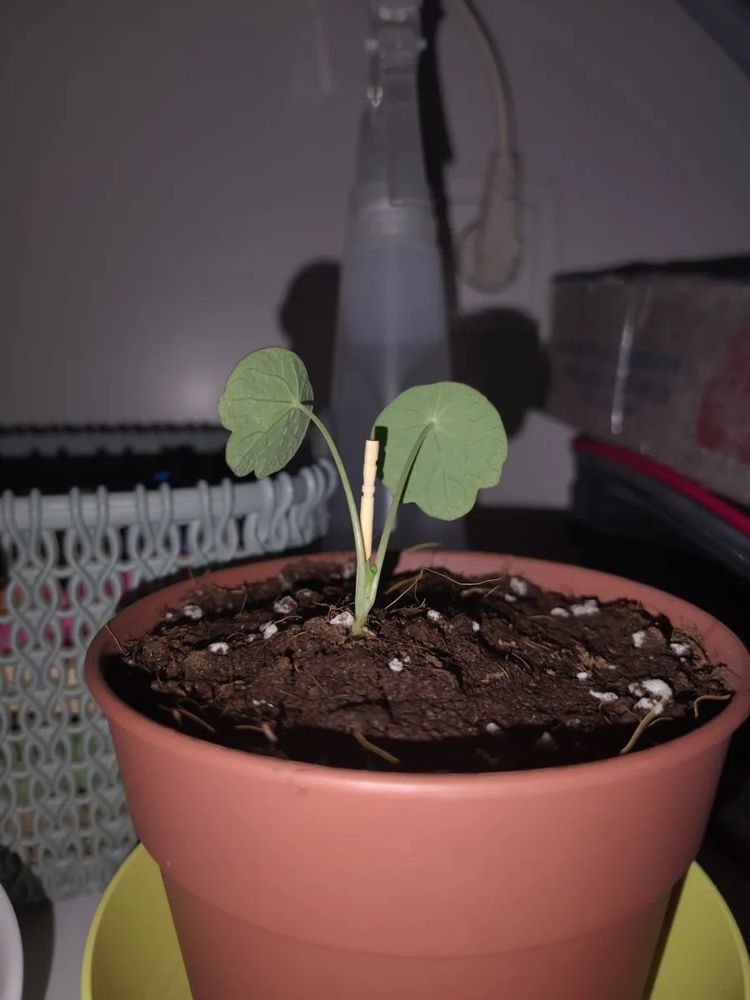

Un día me di cuenta de que mi capuchina estaba de capa caída: las hojas flojas, sin fuerza. Al mirar la maceta vi algo más: en la tierra había unos puntos blancos que se iban esparciendo poco a poco, como un polvillo.
Investigué qué podía ser y probé un remedio de cocina que me funcionó: canela. Te cuento lo que hice y lo que pasó.

Mi capuchina ya recuperada. Los trocitos blancos grandes que se ven en la tierra son perlita del sustrato, no hongo.
1. Cómo me di cuenta
Lo primero que noté fue la planta: la capuchina estaba de capa caída. Al revisar la maceta, en la superficie de la tierra había puntos blancos que parecían un polvo y que se extendían de forma degradada, es decir, empezaban en una zona y se iban esparciendo alrededor.
Mi sospecha es que era un hongo de la tierra. No puedo asegurarte qué hongo era exactamente, pero la pinta de polvillo blanco sobre la tierra de una maceta suele aparecer con humedad y poca ventilación.
Ojo: no confundas el hongo con la perlita
Muchos sustratos llevan perlita, unas bolitas blancas y ásperas que son normales. El hongo que yo vi era un polvillo que se extendía, no bolitas sueltas.
2. Lo que hice: canela por encima
Investigando encontré que la canela se usa de forma casera como antifúngico para la tierra de las macetas. Así que espolvoreé canela por encima de la tierra y ya está.
3. El resultado: en 2 días, fuera
En mi caso funcionó muy rápido: el hongo desapareció por completo a los 2 días y la planta salió adelante. La capuchina estaba en el tendedero, así que tenía luz durante todo el día, algo que seguramente también ayudó a que se recuperase.
Ojo, esto es lo que me pasó a mí con una planta. No te lo cuento como un tratamiento garantizado, sino como lo que hice y cómo salió.
4. Cómo evitar que vuelva
El hongo apareció en una maceta, y lo mismo me pasó con el moho de mi primer terrario: casi siempre hay demasiada humedad y poca ventilación. Si tienes una planta en maceta, deja que la superficie de la tierra se seque entre riegos y ponla en un sitio con mucha luz y aire. Si te interesa el caso del terrario, lo cuento en moho en el terrario: por qué sale y qué hacer.
Preguntas rápidas
¿Qué eché a la tierra? Canela en polvo, espolvoreada por encima.
¿Cuánto tardó en desaparecer el hongo? En mi caso, 2 días.
¿La planta se recuperó? Sí, la capuchina salió adelante.
¿Dónde estaba la planta? En el tendedero, con luz durante todo el día.

¿Prefieres que te lo monte yo?
Hago terrarios cerrados por encargo en la Comunidad de Madrid, desde 25 €.
Ver cómo pedir el tuyo →